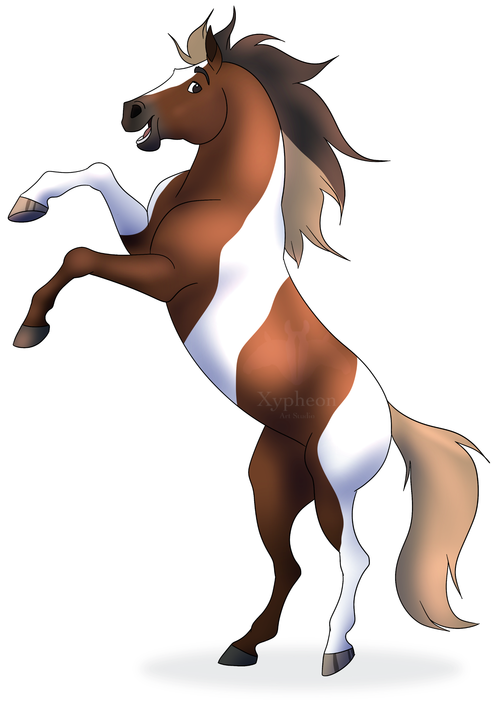
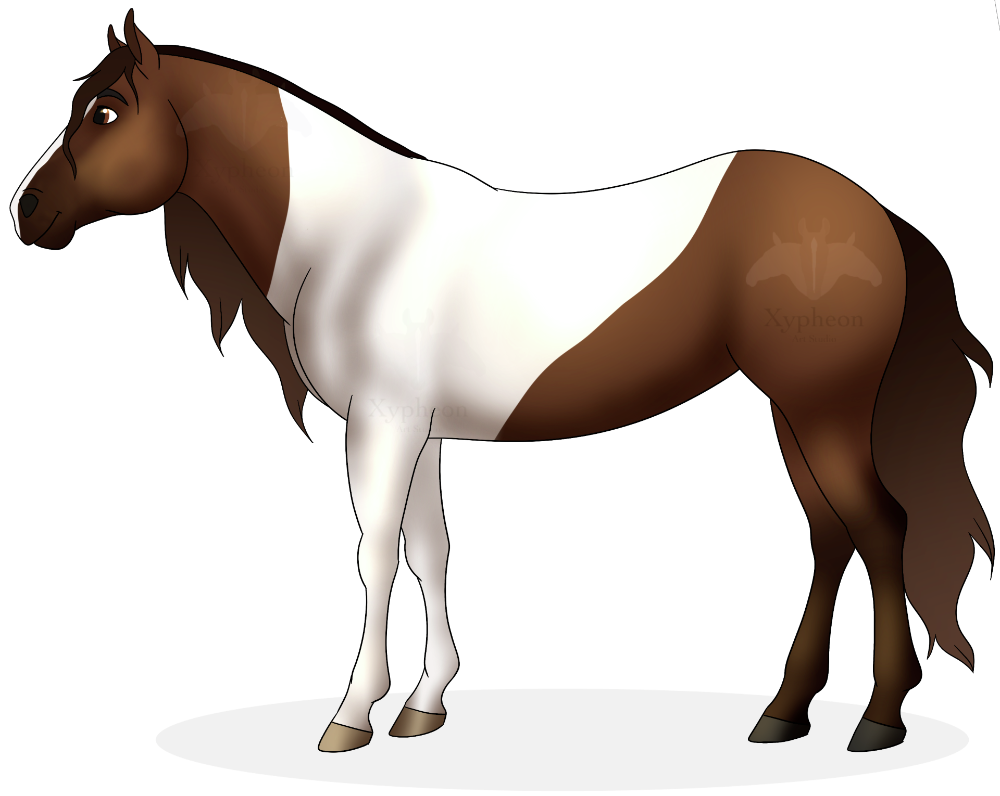
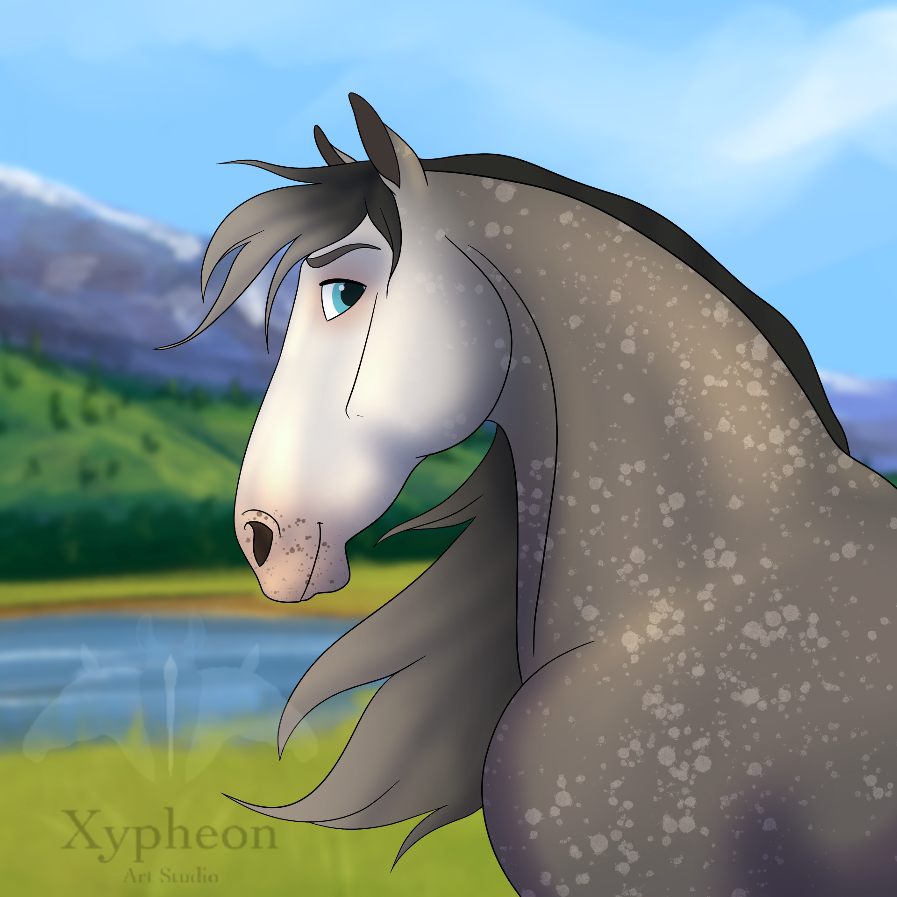

Hier kan je beschikbare items bekijken.
Alle illustraties worden getekend met een resolutie van 350dpi en kleurengamma RGB.
Een mooi portret van je paard. Natuurlijk zonder watermerk.


Type product: Digitaal
Ontwerp: Portret paardenhoofd
Opties: Extra gezichtsbeharing, gepersonaliseerde voorlok, halster/hoofdstel, accessoires
Referentie aanleveren: Een duidelijke vooraanzicht foto van het paard.
Eventueel extra referentie foto's als er keuze wordt gemaakt voor extra opties
Let op!:
Een mooi portret van je paard in elke positie naar wens. Natuurlijk zonder watermerk.
Type product: Digitaal
Ontwerp: Portret fullbody
Opties: Achtergrond, accessoires, aanpassen van manen en staart, gezichtsuitdrukking
Referentie aanleveren: Een duidelijke voor-of zijaanzicht foto van het paard.
Eventueel extra referentie foto's als er keuze wordt gemaakt voor extra opties
Een mooi portret van je paard met achtergrond. Natuurlijk zonder watermerk.
Type product: Digitaal
Ontwerp: Portret fullbody
Opties: Achtergrond, accessoires, aanpassen van manen en staart, gezichtsuitdrukking
Referentie aanleveren: Een duidelijke voor-of zijaanzicht foto van het paard.
Eventueel extra referentie foto's als er keuze wordt gemaakt voor extra opties